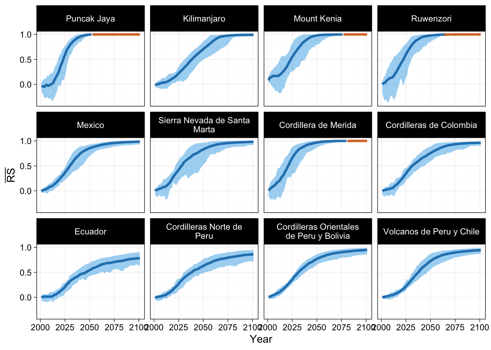

9 Temporal change in Relative Severity
We calculate temporal change in Relative Severity by applying the \(\mathrm{RS}_{i}\) formula to one fixed initial value and a sequence of final values, the final values can represent the state of the indicator in consecutive years (time series), or in different periods (temporal sequence).
9.1 Loss of ice mass
The data from the Dynamic Ice Mass Balance model is provided in one year intervals, and we have summarise the data to provide the total value of ice mass of each assessment unit for each year.
We calculate RS using the predicted ice mass of the year 2000 as initial value, and data from subsequent years (2001 to 2100) as final values, and a collapse threshold of \(0 \mathrm{kg}\). Given that the collapse threshold is also the minimum value of ice possible, and that increases in ice mass are low in magnitude and limited to the start of the time series, we can use the original RS formula. An example of these calculations is given in Figure 6.4.
We denote this estimate of relative severity as \(RS_{ice}^{CT=0}\).
Average RS time series
Using the equation for average RS, we can create time series of \(\overline{\mathrm{RS}}\) for each assessment unit.
The curves indicate an increase of RS, and in some units the maximum value of 1 is attained, indicating ecosystem collapse (red sections of the curve). Certain thresholds could be used to indicate increasing levels of degradation before collapse. For example, a threshold of 0.8 (80% of the maximum value of RS) could be indictive of widespread and very high degradation. The use of these thresholds could be informative to determine the expected tempo of the process of ecosystem collapse.

For example if we compare the years when a model predicts very high degradation and the year when it predicts collapse Figure 9.2, we can see that the gap between both milestones can be as short as 15 years (for Puncak Jaya and Mount Kenia) or as long as half a century (for Mexico), see table Table 9.1.
9.2 Degradation of bioclimatic suitability
Given that both initial and final values of suitability can be below these thresholds, and that future suitability predictions can be well above current values, we use the conditional RS formula for these estimates of RS.

R session info for this chapter
R version 4.3.1 (2023-06-16)
Platform: aarch64-apple-darwin20 (64-bit)
Running under: macOS Sonoma 14.3.1
Matrix products: default
BLAS: /Library/Frameworks/R.framework/Versions/4.3-arm64/Resources/lib/libRblas.0.dylib
LAPACK: /Library/Frameworks/R.framework/Versions/4.3-arm64/Resources/lib/libRlapack.dylib; LAPACK version 3.11.0
locale:
[1] en_US.UTF-8/en_US.UTF-8/en_US.UTF-8/C/en_US.UTF-8/en_US.UTF-8
time zone: Australia/Sydney
tzcode source: internal
attached base packages:
[1] stats graphics grDevices utils datasets methods base
other attached packages:
[1] htmltools_0.5.7 DT_0.31 forcats_1.0.0 tidyr_1.3.0
[5] readr_2.1.4 purrr_1.0.2 ggrepel_0.9.4 stringr_1.5.1
[9] units_0.8-5 ggplot2_3.4.4 dplyr_1.1.4
loaded via a namespace (and not attached):
[1] sass_0.4.8 utf8_1.2.4 generics_0.1.3 stringi_1.8.3
[5] hms_1.1.3 digest_0.6.33 magrittr_2.0.3 evaluate_0.23
[9] grid_4.3.1 fastmap_1.1.1 rprojroot_2.0.4 jsonlite_1.8.8
[13] fansi_1.0.6 crosstalk_1.2.1 scales_1.3.0 jquerylib_0.1.4
[17] cli_3.6.2 rlang_1.1.2 crayon_1.5.2 ellipsis_0.3.2
[21] bit64_4.0.5 munsell_0.5.0 cachem_1.0.8 withr_2.5.2
[25] yaml_2.3.8 tools_4.3.1 parallel_4.3.1 tzdb_0.4.0
[29] colorspace_2.1-0 here_1.0.1 vctrs_0.6.5 R6_2.5.1
[33] lifecycle_1.0.4 htmlwidgets_1.6.4 bit_4.0.5 vroom_1.6.5
[37] pkgconfig_2.0.3 bslib_0.6.1 pillar_1.9.0 gtable_0.3.4
[41] glue_1.6.2 Rcpp_1.0.11 xfun_0.41 tibble_3.2.1
[45] tidyselect_1.2.0 rstudioapi_0.15.0 knitr_1.45 farver_2.1.1
[49] rmarkdown_2.25 labeling_0.4.3 compiler_4.3.1